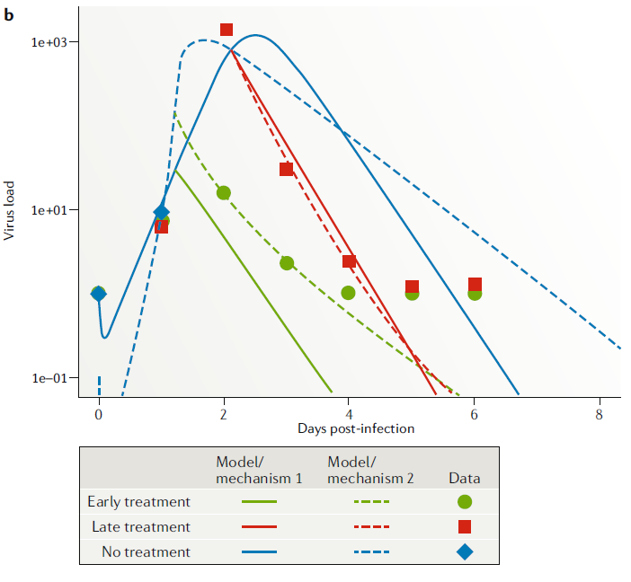

Models for Fitting Data
Andreas Handel
2022-05-03 11:18:36
Overview
This document describes how to use simulation models and fit them to data.
Learning Objectives
- Know when and why to use simulation models for fitting.
Introduction
You can use models for exploration and prediction without the need of data that is specifically matched to your model.
If you have the right kind of data available, it is possible to fit a model to data in a rigorous statistical manner (perform inference). Pretty much all the machinery that can be applied to phenomenological models such as linear/logistic regression or any other non-mechanistic model can be applied to mechanistic models. That means you can do fitting using frequentist, likelihood or bayesian methods, and any other useful statistical methodology.
An important difference to phenomenological models is that when fitting mechanistic models you explicitly have mechanisms in your model which can represent different hypotheses about your system. Fitting to data allows you to discriminate between different postulated mechanisms (hypotheses), which are translated into different models and fitting determines which model is better at explaining the observed data. Further, model fitting provides estimates for model parameters. Often, such parameters have a directly interpretable biological meaning (e.g. the rate of virus production by infected cells) and are thus of interest on their own.
Videos & Slides
This video discusses use of models for data fitting and inference. Slides that go with the recording can be found here as html or as pdf.. These also contain the slides for the other model use units.
How to Fit Models to Data
First you need to assess the data you have. Since the simulation model produces time-series, having time-series data is best. It is also possible to fit models to data that is measured at only a single time point, e.g. antibody levels at the end of an infection. In general, you will not have data for all of the components in the model. You might for instance only have viral load data, but no data on uninfected and infected cells. In general, more data, and especially more data for different components of your model is better. The more data you have, the more model parameters you might be able to reliably estimate and thus the more complex a model you can justify. If you don’t have much data, it is often not possible to estimate many parameters. Trying to do so will lead to overfitting and unreliable results.
Matching Model and Data
Once you have investigated your data and built a model such that some of the data can be mapped to the model, you can implement the fitting. The way this works is that you choose starting values for the parameters you want to fit. You run the model, then you compare the time-series of the model predictions to your data. This comparison can be done in different ways. The simplest and most common approach is to minimize the sum of square differences.
As an example, assume you have viral load data for different time points as data. Your model has a variable for virus that matches that data. For any choice of model parameters, you can then compare the model predicted virus load \(Vm_t\) with the data \(Vd_t\) by computing the sum of square errors between data and model for all data points, i.e.
\[ SSR= \sum_t (Vm_t - Vd_t)^2 \] where \(Vm_t\) is the virus load (usually done in log units) predicted from the model simulation at days \(t=1..8\) and \(Vd_t\) is the data, reported in those same units and on those time points.
Your fitting routine then varies model parameters, for each new set of model parameters it runs the simulation, determines predicted viral load from the model, and computes the \(SSR\). This is repeated in a way to try and get the model predictions as close as possible to the data. Once the fitting routine has found a set of parameters that produces and SSR that can’t be further reduced by additional parameter adjustment, you have found the best fit.
While minimizing the sum of square difference between data and model prediction is a very common approach, it is not the only one. A more flexible formulation of the problem is to define a likelihood function, which is a mathematical object that compares the difference between model and data and has its maximum for the model settings that most closely describe the data. Under certain assumptions, maximizing the likelihood and minimizing the sum of squares are the same problem. Further details on this are beyond the basic introduction we want to provide here.
In general, with enough data, one could fit/estimate every parameter in the model and the initial conditions. However, quite often there is not enough data available. Depending on the data and model complexity, some parameters might have to be kept fixed based on outside biological knowledge. Testing to see if your model can properly estimate the parameters you are interested in is an important part of the fitting approach. One of the DSAIRM apps walks you through that.
Computer Routines for Fitting
A computer routine does the minimization of the sum of squares. Many
such routines, generally referred to as optimizers, exist. For
simple problems, e.g., fitting a linear regression model to data, any of
the standard routines work fine. For the kind of minimization problem we
face here, which involves a differential equation, it often makes a
difference what numerical optimizer routine one uses. R has
several packages for that purpose. In this app, we make use of the
optimizer algorithms called COBYLA, Nelder-Mead and
Subplex from the the nloptr package. This package
provides access to a large number of optimizers and is a good choice for
many optimization/fitting tasks. For more information , see the help
files for the nloptr package and especially the nlopt website. For any problem
that involves fitting ODE models to data, it is often important to try
different numerical routines and different starting points to ensure
results are consistent.
Model Fitting Example
Assume we have a drug for an acute viral infection (say neuraminidase inhibitors for influenza) and we have two competing hypotheses. Hypothesis one is that the mechanism of drug action is to reduce infection rate of uninfected cells. Hypothesis two is that the mechanism of drug action is to reduce virion production rate by infected cells. (Of course we could also have hypotheses 3 and 4 that neither or both mechanisms occur, we ignore that for this example.)
To investigate this question, we need data from infected hosts (humans or animals) in the presence or absence of the drug. We can then build models that incorporate the different mechanisms as specified by our hypotheses and fit the models to the data. The better-fitting model can then be interpreted as the mechanism/hypothesis that has more support from the data.
Here are two models for the two hypotheses. The first model has the mechanism of drug reducing infection rate at strength \(f\).
\[ \begin{aligned} \dot{U} & = - b{\bf(1-f)}UV \\ \dot{I} & = b{\bf(1-f)}UV - d_I I \\ \dot{V} & = pI - d_V V - gb{\bf(1-f)} UV \\ \end{aligned} \]
The second model incorporates the mechanism of drug reducing virus production by infected cells at strength \(e\).
\[ \begin{aligned} \dot{U} & = - bUV \\ \dot{I} & = bUV - d_I I \\ \dot{V} & = p{\bf (1-e)}I - d_V V - gb UV \\ \end{aligned} \]
Note that while I’m showing the two mechanisms/hypotheses as two separate models for clarity. We could have put both mechanisms into a single model and switched between them by turning on/off \(f\) or \(e\). That’s likely how we would implement it in the code.
It turns out that for this question, what we have available as data is viral load (nasal wash) for different drug treatment conditions (early, late, never). This corresponds to \(V\) in the model (though we need to check that the model quantity \(V\) which measures infectious virus at the site of infection is properly mapped onto the data which is virus concentration in nasal wash). Fitting the models to the data, we get the following fits

We can also statistically evaluate the quality of fit for each model (using some approach, e.g. cross-validated goodness of fit, or some information criterion). We would find here that model/hypothesis 2 fits the data better.
Parameter Estimates
The parameters in our models often represent important biological quantities, fitting returns estimates for the parameter values. Thus, by fitting models, we can also estimate biologically meaningful parameters. This can be done either in the context of model comparison, or by just fitting a single model. If one fits multiple models, one can evaluate the model that is deemed statistically the best, and explore if it seems good enough to describe the data (a “best” model among a set of poorly performing models might still be a “bad” model, so one always needs to check). If one of the tested models is deemed a good approximation of the real system, the estimates for its parameters can be consider meaningful. For the above example, the best-fit estimate e=0.98 means the drug reduces virus production by 98%.
One could also start with just one model that one believes to adequately describe the system. Fitting the model produces best fit parameter estimates, which likely have biological meaning. E.g. one might want to use a simple model to estimate the average lifespan of an infected cell.
Fitting a single model and looking at the estimated values for the parameters also allows one to test mechanisms/hypotheses to some extent, e.g. we could use the hypothesis 2 model from above and ask if the drug has an effect (e>0) or not (\(e\approx 0\)). Fitting a single model and looking at the value of \(e\) could answer this. To test more complex hypotheses/mechanisms, one often needs several distinct models, as shown in the example above.
Fitting Comments
Fitting mechanistic models is conceptually the same as fitting phenomenological (e.g. regression) models, but technically more challenging. If a non-mechanistic model doesn’t fit well, we mainly just learned that we need a better model. If a mechanistic model that was built based on our best knowledge doesn’t fit well, we have learned something useful! Thus, mechanistic models can potentially provide deeper and more useful insights into a system, and they allow explicit testing of mechanisms. The downside is that fitting such models is still technically more complex than fitting other types of models.
As you do model fitting, it is important to keep in mind the ever-present problem of overfitting. If a model is too complex, and you are trying to estimate too many parameters, you might get good fits but they might happen for biologically unreasonable parameter values. Simulation models, especially complex ones, are often flexible enough that they can get close to the data in many different ways. You want to make sure that you robustly figure out the right processes. A way to assess if your model is up to the task, given the data, is to simulate data using your model, then fit that simulated data and try to see if you can get the estimates back that you started with. If you do not, it means your model is too big for the data you have.

With four parameters I can fit an elephant, and with five I can make him wiggle his trunk.
John von Neumann